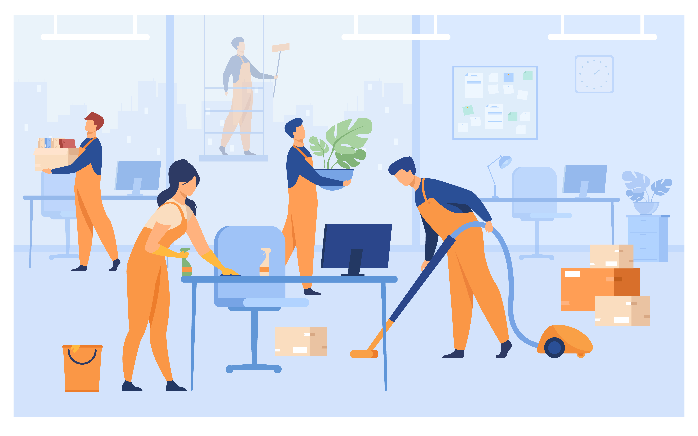
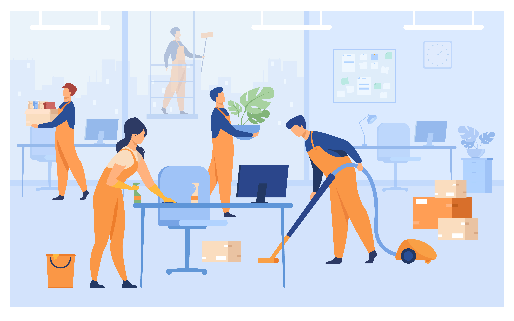
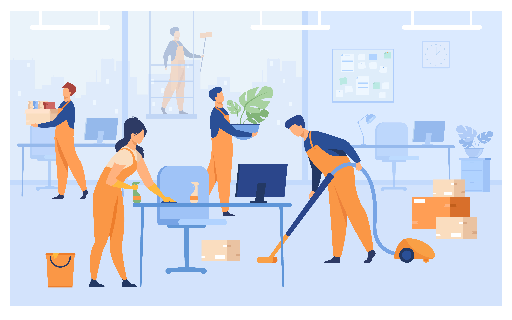

IMFConciergerie se met au service de tous vos besoins du quotidien.
LA CONCIERGERIE DIGITALE QUI S’ADAPTE À VOS BESOINS
On s'occupe de tout !
QUI SOMMES NOUS ?
IMF CONCIERGERIE est un services d'assistance personnels nous, vous offrons le temps de profiter de la vie.
Détendez-vous ! Nous nous occupons de tout, pour vous.
Rendez-vous sur votre page « Services ».
Une larges gamme de services pour les particuliers et pour les professionnels vous attendent
Les experts sont là ! Ménagez-vous du temps pour faire ce que vous aimez ! Allez! Consacrez votre temps libre à vos proches, à vos amis
et surtout à vous ! Confiez nous vos projets, ils méritent l’attention et le support d’une équipe professionnelle !
L’équipe de IMF CONCIERGERIE et les partenaires commerciaux sont des spécialistes dans les domaines des services aux personnes
et aux entreprises, de l’horeca, de la logistique, du secrétariat, de l’ICT, du web…
Nous vous mettons en relation avec notre réseau du savoir-faire pour s’occuper de vos corvées, réaliser vos envies,
et vos besoins en toute confiance.
Facilitez et améliorez l’organisation de vos tâches avec les services, abonnements et annuaires de notre conciergerie.
Nous sommes disponible pour tous vos services à domicile ou au bureau, & LifeStyle management. Commencer à mieux concilier votre
vie privée et votre vie professionnelle.

CATALOGUE DE SERVICES
Les services à domicile sont particulièrement adaptés pour vous que se soient en télé-travail ou non.
Garde d’enfants,
intervention d’un artisan, il est devenu indispensable d’avoir un accès facile à l’aide à domicile pour soi ou en tant qu’aidant.
Nous sélectionnons les bons prestataires et faisons une mise en relation facile et pratique pour le plus grand bonheur de chacun.
Nous vous livrons partout sur place pour vous faciliter
l’accès à vos produits et services du quotidien, sans contrainte de déplacement et de temps.
Livrés à l’accueil, en consignes ou en boutique de conciergerie que se soient : pressing, maraicher, cordonnier, caviste, fleuriste, retoucheur,
sont accessibles à tous, nous nous occupons de tout.
 
